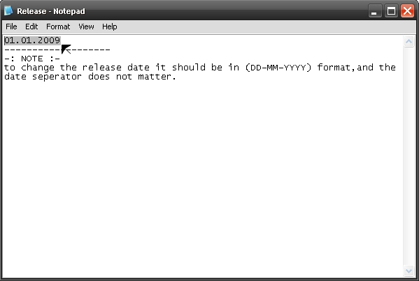

to use the underconstruction movie, all you have to do is to edit the release date of your website as follows:

There is a font included with the source file named "BRAESIDE.TTF", do not forget to install it to your windows fonts directrory ("WINDOWS\FONTS") and make sure to refresh the fonts file until this font appears
Hope you like the animation,
if you face any problem, please contact me at anas.marwan@gmail.com
or via flash den website and i will be glad to help you..